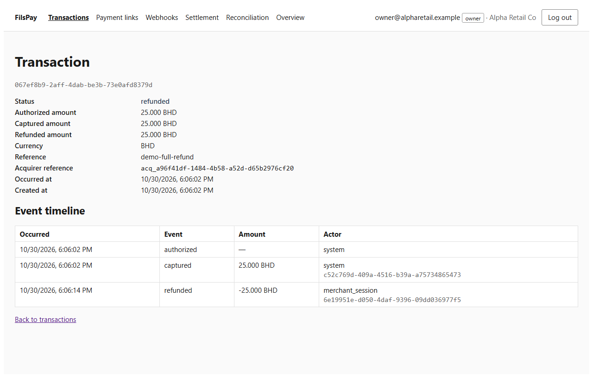
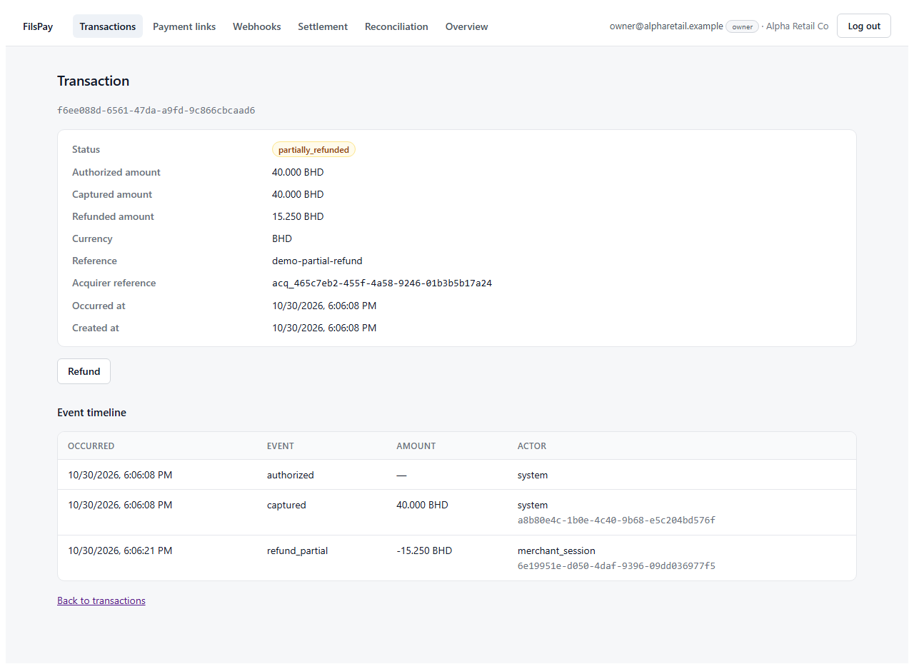
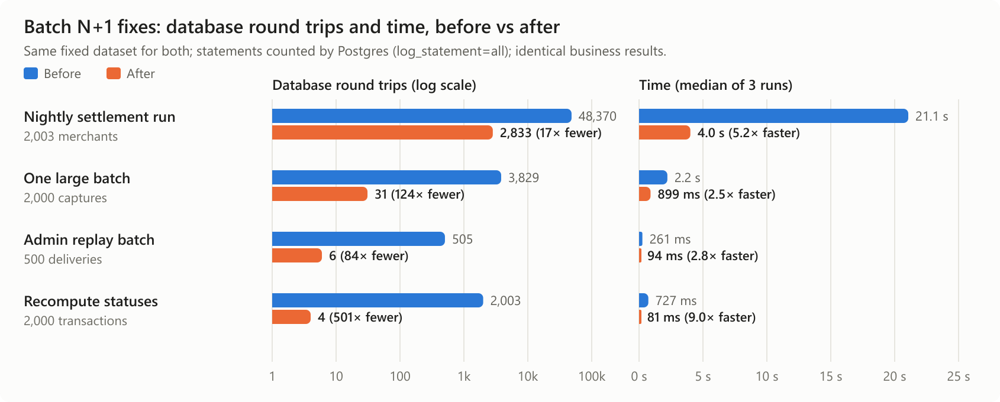
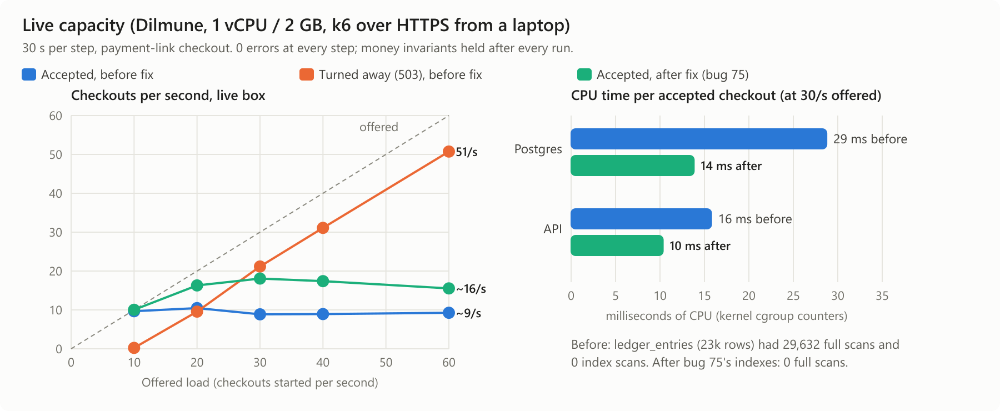
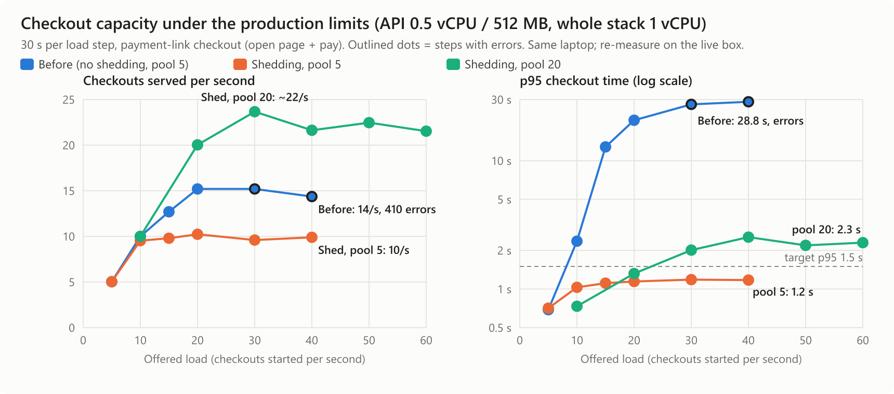

Saad Karim: ROLE_SAAD_TBD
Maaz Karim: ROLE_MAAZ_TBD
79 findings fixed · refunds (FP-300) shipped end to end · live on Dilmune Cloud
https://165-232-180-63.sslip.io · github.com/saadkarim247/fils-pay
CLAUDE.md, AGENTS.md and .cursorrules said cents, UTC midnight, "never edit tests" and "Math.random is fine". Each one hid a real bug.
A cents parser, float32 payouts, an int32 counter, and parts of an amount rounded one at a time.
Two refunds both paid, two buyers on one link, duplicate payouts, the same CSV applied twice.
| Concern | Root cause | Fix | Proof |
|---|---|---|---|
| Scheme total "always a few fils higher" | File rounded the gross; books truncated; residue never journaled | Export truncated fils, journal residue (ADR-0002) | "93.28" → "93.27" · 50 |
| March sweep ran twice, gap doubled | New random id each run; debited merchants | Id per merchant and month + lock; ADR legs | 2nd run posts nothing · 49 |
| Delta split children ≠ parent | Each share rounded alone | Largest remainder | 1,001 → 334/333/334 · 41 |
| Rebuild balances 135K → 7K (FP-203) | Console rebuilt from scheme lines, not the ledger | Rebuild from the ledger (ADR-0007) | Console = CLI · 39 |
| MDR recalc changes paid batches | status <> 'open' includes paid | status = 'closed' | Paid batch unchanged · 16 |
| Shows 245 bps, charges 225 | Display ignored the effective date | Same query as capture | Both 225 · 18 |
| CSV 4.75 BD → 0.475 | Parsed as cents (2 dp), against ADR-0001 | parseBhdToFils; file hash unique | 12/16 failing → pass · 13, 20 |
| Concern | Root cause | Fix | # |
|---|---|---|---|
| "Login works without the OTP" | Session view dropped authenticated = true | Require it: password-only cookie 200 → 401 | 02, 03 |
| "Daily close runs at 3am" | "Today" taken from the UTC date | Bahrain date; refuse an unfinished day | 17, 40 |
| "Test merchants in the real settlement run" | Recompute counted 0 auths → test_mode = false | Never touch the flag | 09 |
| "A cancelled B's payment link" | Cancel matched the link id only | Scope by authenticated merchant | 11 |
| "Lifetime estimate drifts" | Summed in float32 | BIGINT fils | 57 |
| "Admin actions lack role checks" | Support creates credits; view-as-merchant writes | Roles per route; impersonation read-only | 07, 04, 46 |
| "Key rotation doesn't do what you'd expect" | The old key was never revoked | Rotation revokes the old key | 05 |
| "OTP changed: still safe?" | Math.random; guess limit could be raced | node:crypto; atomic budget | 44, 53 |
| "Reporting query slow" · "large export" | Counted N times per capture · whole history in memory | One correct query · streamed CSV | 42, 55 |
| Ticket | Root cause | Fix | Proof |
|---|---|---|---|
| Incident 05-14: link charged twice | Stale reservation re-claimable; 0-row finalize said "paid" | Reservation owner id; mark paid before capture | 2 captures → 1 + 409 · 23 |
| Incident 08-21: duplicate payout notices | No unique key; one disbursement per webhook delivery | One event and one disbursement per paid batch | 4 events → 1 · 24 |
| FP-209: two refunds both succeed | No lock; absolute refunded_fils write | One row-locked transaction + DB CHECK | 5 paid → ≤ 3 · 28 |
| FP-187: link paid after expiry | Trusted the buyer's submittedAt | Server clock | Expired → 410 · 38 |
| FP-240: signer and sender disagree | Signed sorted JSON, sent other bytes; callbacks fail open | Sign the bytes sent; signature required | Receivers verify · 36, 37, 12 |
| FP-201: duplicate callback notes | No unique key on the callback id | Unique index (0078) | 2 deliveries → 1 note · 43 |
The 1.6.0 changelog said 05-14 was fixed by de-duplicating callbacks. Callbacks only write notes, so that was never the cause.
| Done when… | What we had to fix | # |
|---|---|---|
| Works end to end through the API | Route returned 501, drawer unwired; B could refund A's sale; a refund with no reason lost the record | 35, 26, 25 |
| Ledger right to the fils; fees and payouts right | Refund above the captured amount; concurrent refunds; fee reversal 22 → 21; settlement paid out refunded money | 27, 28, 29, 30 |
| Shop gets the right webhook | refund.succeeded never delivered | 32 |
| Correct in timeline, reports and reconciliation | Refunded page crashed; reconciliation, summary view and analytics all ignored refunds | 34, 31, 33, 58 |
| Live on Dilmune Cloud | Deployed; full and partial refund shown on the next slide | ✓ |


Full: 25.000 BD → refunded, timeline −25.000
Partial: 15.250 of 40.000 BD → partially_refunded, 24.750 left
Dashboard drawer → POST /v1/merchants/:id/refunds → ledger reverses amount and fee to the fil → refund.succeeded webhook → nightly batch nets the refund out of the payout.
How: we ran each batch job against a throwaway Postgres with log_statement=all, on a fixed dataset (2,003 merchants), 3 runs each. Every logged statement is one round trip.
Found: one query per row. The nightly run spent ~24 statements on every merchant, including the 95% with no sales.
Fix: set-based SQL (unnest, a single statement for idle merchants).
Proof: old and new binaries gave identical totals on the same data.
| Job | Round trips | Time |
|---|---|---|
| Nightly settlement | 48,370 → 2,833 | 21.1 s → 4.0 s |
| One 2,000-line batch | 3,829 → 31 | 2.2 s → 0.9 s |
| Replay 500 webhooks | 505 → 6 | 261 → 94 ms |
| Recompute 2,000 statuses | 2,003 → 4 | 727 → 81 ms |

checkouts/s sustained, 21/s peak: about 1,200 buyers a minute
errors at 150/s offered; excess gets 503 + Retry-After in 3–4 ms (server)
after one missing-index fix (75): 9 → 16–18/s
crash → back up; half-done checkouts repaired, money invariants hold
Measured with k6 against the live box over HTTPS; money invariants checked after every run. The limit was Postgres CPU until bug 75. It is now the 20-connection pool held through the acquirer call, and the single vCPU is next.

Setup: the brief and ADRs as the only truth, every doc claim checked in the code, one bug per commit, tests on a fresh database. The rules files, commands and scripts are in .claude/ and tools/.
The repo's own CLAUDE.md told AI tools that money was cents, settlement ran on UTC and tests must never change. We treated it as part of the code under audit; each of its rules pointed to a real bug.
docker stats said Postgres used about 5% CPU, and the AI took that at face value. The kernel's cgroup counters showed it throttled 90–95% of the time. That led us to the real cause: checkout scanned the whole ledger (finding 75).

Full findings with reproduction, verification and data impact: submission document, section 4. Load-test harness: perf/checkout/.